Dynamic Transport and Flows for ML
Why dynamic flows?
Machine learning increasingly manipulates distributions by evolving them:
- diffusion and flow-matching generative models,
- gradient-flow training dynamics,
- population dynamics in neural networks,
- token dynamics in transformers,
- biological trajectories and multi-omics integration.
Dynamic OT gives a common language for these evolutions.
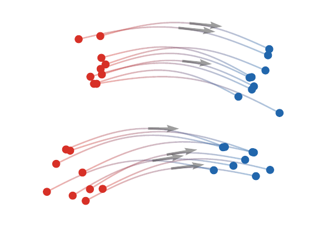
Roadmap: generative transport
1. Generative transport

2. Dynamic OT

3. Gradient flows
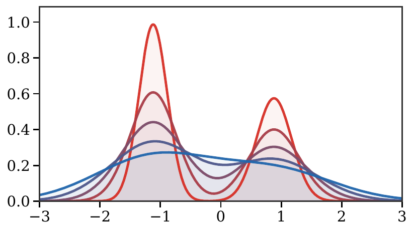
4. Training and biology

5. Attention dynamics

Auto-regressive factorization
Auto-regressive models factor a high-dimensional law into conditional probabilities, p_\theta(z_1,\ldots,z_N)=\prod_{k=1}^N p_\theta(z_k\mid z_1,\ldots,z_{k-1}). Generation is sequential: each new token is sampled conditionally on the previous ones.
Training objective. Maximum likelihood becomes next-token prediction: \max_\theta\sum_{\ell}\sum_{k=1}^{N_\ell} \log p_\theta(z_k^\ell\mid z_{<k}^\ell).
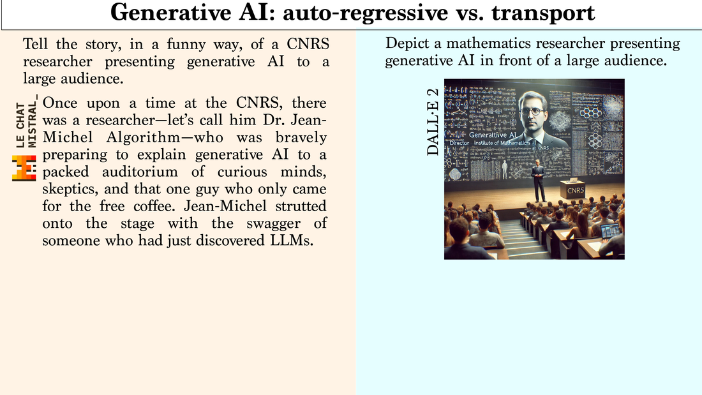
Transport as a push-forward model
Transport models construct a map or flow from a simple reference distribution to the data distribution.
Transport viewpoint. Generation is the construction of a map \textcolor{#7c5bbd}{T} or a flow \textcolor{#7c5bbd}{\Phi_t} such that \textcolor{#7c5bbd}{T_\#}\textcolor{#c7372f}{\alpha_0}=\textcolor{#226db4}{\alpha_1}, \qquad (\textcolor{#7c5bbd}{\Phi_1})_\#\textcolor{#c7372f}{\alpha_0}=\textcolor{#226db4}{\alpha_1}. If \textcolor{#c7372f}{X_0}\sim\textcolor{#c7372f}{\alpha_0}, then \textcolor{#226db4}{X_1}=\textcolor{#7c5bbd}{T}(\textcolor{#c7372f}{X_0}) is a generated sample.
For a continuous flow, \frac{d}{dt}\textcolor{#7c5bbd}{\Phi_t}(x)=v_t(\textcolor{#7c5bbd}{\Phi_t}(x)), \qquad \textcolor{#7c5bbd}{\Phi_0}=\operatorname{Id}, \qquad \textcolor{#226db4}{X_1}=\textcolor{#7c5bbd}{\Phi_1}(\textcolor{#c7372f}{X_0}).
Eulerian and Lagrangian descriptions
Two equivalent views. A curve of measures (\textcolor{#c7372f}{\alpha_t})_{t\in[0,1]} can be described:
- in Eulerian form by a density and velocity field (\rho_t,v_t),
- in Lagrangian form by particle trajectories \dot{\textcolor{#7c5bbd}{X_t}}=v_t(\textcolor{#7c5bbd}{X_t}).
The Eulerian law obeys \partial_t\rho_t+\operatorname{div}(\rho_t v_t)=0. If \textcolor{#7c5bbd}{\Phi_t} solves \frac{d}{dt}\textcolor{#7c5bbd}{\Phi_t}(x)=v_t(\textcolor{#7c5bbd}{\Phi_t}(x)), \qquad \textcolor{#7c5bbd}{\Phi_0}(x)=x, then \textcolor{#c7372f}{\alpha_t}=(\textcolor{#7c5bbd}{\Phi_t})_\#\textcolor{#c7372f}{\alpha_0}.
Weak continuity equation
The Eulerian equation is usually read weakly: for every smooth test function \varphi, \frac{d}{dt}\int_{\mathbb R^d}\varphi(x)\,d\textcolor{#c7372f}{\alpha_t}(x) = \int_{\mathbb R^d}\langle \nabla\varphi(x),v_t(x)\rangle\,d\textcolor{#c7372f}{\alpha_t}(x).
Particle interpretation. If \textcolor{#7c5bbd}{X_t} solves \dot{\textcolor{#7c5bbd}{X_t}}=v_t(\textcolor{#7c5bbd}{X_t}), then the chain rule gives \frac{d}{dt}\mathbb E[\varphi(\textcolor{#7c5bbd}{X_t})] = \mathbb E[\langle\nabla\varphi(\textcolor{#7c5bbd}{X_t}),v_t(\textcolor{#7c5bbd}{X_t})\rangle], which is exactly the weak form with \textcolor{#c7372f}{\alpha_t}=\operatorname{Law}(\textcolor{#7c5bbd}{X_t}).
This formula is the common language behind samples, neurons, tokens, and cells.
Otto metric and velocity reconstruction
To turn a curve \textcolor{#c7372f}{\alpha_t} into a geometric length, one chooses the least kinetic velocity realizing it.
Wasserstein tangent norm. At \textcolor{#c7372f}{\alpha}=\rho\,dx, the velocity cost is \|v\|_{L^2(\textcolor{#c7372f}{\alpha})}^2 =\int_{\mathbb R^d}\|v(x)\|^2\,d\textcolor{#c7372f}{\alpha}(x). Given \dot{\textcolor{#c7372f}{\alpha}}, one solves \min_v\left\{\int\|v\|^2\,d\textcolor{#c7372f}{\alpha}: \dot{\textcolor{#c7372f}{\alpha}}+\operatorname{div}(\textcolor{#c7372f}{\alpha}v)=0\right\}.
This is the infinitesimal form of the Benamou-Brenier action used later for dynamic OT.
Velocity reconstruction
The minimizer in the tangent problem is not arbitrary: it is a gradient field.
Weighted Poisson equation. The optimal velocity is v=\nabla\psi, where -\operatorname{div}(\textcolor{#c7372f}{\alpha}\nabla\psi) =\dot{\textcolor{#c7372f}{\alpha}}, \qquad \Delta_{\textcolor{#c7372f}{\alpha}}\psi:=\operatorname{div}(\textcolor{#c7372f}{\alpha}\nabla\psi). Equivalently, \psi=-\Delta_{\textcolor{#c7372f}{\alpha}}^{-1}\dot{\textcolor{#c7372f}{\alpha}} and v=\nabla\psi.
This weighted Poisson inversion is the formal Riemannian structure behind Otto calculus. It is powerful, but intractable in high dimension unless the curve has special structure.
First variation of an energy
The bridge from kinematics to optimization starts with the first variation of an energy.
First variation. For a functional \mathcal F, define its first variation by \mathcal F(\textcolor{#c7372f}{\alpha}+\tau\chi) =\mathcal F(\textcolor{#c7372f}{\alpha}) +\tau\int \frac{\delta\mathcal F}{\delta\alpha}\,d\chi+o(\tau).
The scalar field \delta\mathcal F/\delta\alpha plays the role of the Euclidean gradient, but it is converted into a transport velocity by taking a spatial gradient.
Wasserstein gradient equation
The Wasserstein metric selects the steepest admissible transport velocity.
Gradient flow PDE. The steepest-descent velocity is v_t=-\nabla\frac{\delta\mathcal F}{\delta\alpha}(\textcolor{#c7372f}{\alpha_t}), \qquad \partial_t\textcolor{#c7372f}{\alpha_t} +\operatorname{div}(\textcolor{#c7372f}{\alpha_t}v_t)=0. The Eulerian PDE and the Lagrangian particle ODE are two descriptions of the same gradient flow.
This viewpoint is reused for sampling, neural-network training, genomics, and attention dynamics.
Interactive: transport sampling
A deterministic transport sampler moves particles from a simple source cloud to a target cloud. The slider shows a Lagrangian interpolation. If \textcolor{#7c5bbd}{T_\#}\textcolor{#c7372f}{\alpha_0}=\textcolor{#226db4}{\alpha_1}, the displacement path is \textcolor{#7c5bbd}{X_t} =(1-t)\textcolor{#c7372f}{X_0} +t\,\textcolor{#7c5bbd}{T}(\textcolor{#c7372f}{X_0}), \qquad \textcolor{#c7372f}{\alpha_t} =((1-t)\operatorname{Id}+t\textcolor{#7c5bbd}{T})_\#\textcolor{#c7372f}{\alpha_0}. The velocity along each path is constant: \dot{\textcolor{#7c5bbd}{X_t}} =\textcolor{#7c5bbd}{T}(\textcolor{#c7372f}{X_0})-\textcolor{#c7372f}{X_0}.
Live panel: transport flow sampling
The MyST panel exposes the same sampler with the book controls and notation.
Stochastic interpolants and flow matching
Interpolant. A stochastic interpolant defines random variables \textcolor{#7c5bbd}{X_t}=I_t(\textcolor{#c7372f}{X_0},\textcolor{#226db4}{X_1},Z), \qquad \textcolor{#c7372f}{X_0}\sim\textcolor{#c7372f}{\alpha_0}, \quad \textcolor{#226db4}{X_1}\sim\textcolor{#226db4}{\alpha_1}, possibly with additional noise Z. Its conditional velocity is u_t=\partial_t I_t(\textcolor{#c7372f}{X_0},\textcolor{#226db4}{X_1},Z).
The goal of flow matching is to learn a vector field v_t whose continuity equation reproduces the law of \textcolor{#7c5bbd}{X_t}.
For the linear deterministic interpolant, \textcolor{#7c5bbd}{X_t}=(1-t)\textcolor{#c7372f}{X_0}+t\textcolor{#226db4}{X_1}, \qquad u_t=\partial_t\textcolor{#7c5bbd}{X_t} =\textcolor{#226db4}{X_1}-\textcolor{#c7372f}{X_0}. The endpoint coupling may be independent, optimal, or learned.
Live panel: flow-matching trajectories
Different endpoint couplings and schedules generate different training velocities.
Three interpolants
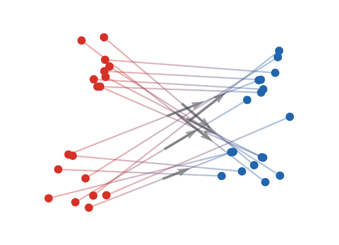
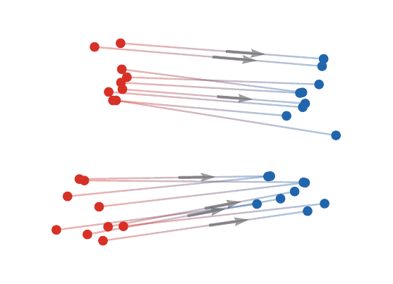
The coupling between endpoints and the time schedule change the geometry of the learned flow.
Flow matching objective
Let u_t be the conditional velocity of the interpolant. A common objective is \min_v \int_0^1 \mathbb E\left[\|v_t(\textcolor{#7c5bbd}{X_t})-u_t\|^2\right]dt.
Flow matching identity. The minimizer is the conditional expectation v_t(\textcolor{#7c5bbd}{x})=\mathbb E[u_t\mid \textcolor{#7c5bbd}{X_t}=\textcolor{#7c5bbd}{x}], and it transports the marginal law of \textcolor{#7c5bbd}{X_t} through the continuity equation.
Independent convolution interpolant
The reference flow-matching construction uses the independent endpoint coupling: \textcolor{#7c5bbd}{X_t}=(1-t)\textcolor{#c7372f}{X_0}+t\textcolor{#226db4}{X_1}, \qquad \textcolor{#c7372f}{X_0}\sim\textcolor{#c7372f}{\alpha_0},\quad \textcolor{#226db4}{X_1}\sim\textcolor{#226db4}{\alpha_1}, \quad \textcolor{#c7372f}{X_0}\perp \textcolor{#226db4}{X_1}. Then u_t=\textcolor{#226db4}{X_1}-\textcolor{#c7372f}{X_0} and v_t(x)=\mathbb E[\textcolor{#226db4}{X_1}-\textcolor{#c7372f}{X_0} \mid (1-t)\textcolor{#c7372f}{X_0}+t\textcolor{#226db4}{X_1}=x], \qquad \partial_t\alpha_t+\operatorname{div}(\alpha_t v_t)=0. If \textcolor{#c7372f}{\alpha_0}=\mathrm N(0,I) and \rho_t=d\alpha_t/dx, Tweedie’s formula gives, for t>0, v_t(x)=\frac{x}{t}+\frac{1-t}{t}\nabla\log \rho_t(x). The reverse noising convention rewrites the same score identity with 1-t in the denominator, as in diffusion-model notation.
Algorithm: flow matching training
Flow matching from paired endpoint samples. Input: endpoint sampler (\textcolor{#c7372f}{X_0},\textcolor{#226db4}{X_1}), schedule I_t, conditional velocity u_t, network v_\theta(t,\textcolor{#7c5bbd}{x}).
Output: trained vector field v_\theta.
- Sample a mini-batch (\textcolor{#c7372f}{x_0^r},\textcolor{#226db4}{x_1^r})_r.
- Sample times t_r\sim\mathrm U(0,1).
- Form \textcolor{#7c5bbd}{x_t^r}=I_{t_r}(\textcolor{#c7372f}{x_0^r},\textcolor{#226db4}{x_1^r}) and u_t^r=u_{t_r}(\textcolor{#c7372f}{x_0^r},\textcolor{#226db4}{x_1^r}).
- Minimize \sum_r\|v_\theta(t_r,\textcolor{#7c5bbd}{x_t^r})-u_t^r\|^2 by stochastic gradient descent.
- Generate samples by integrating \dot{\textcolor{#7c5bbd}{X_t}}=v_\theta(t,\textcolor{#7c5bbd}{X_t}) from \textcolor{#c7372f}{X_0}\sim\textcolor{#c7372f}{\alpha_0}.
Diffusion versus optimal transport
Flow matching often fixes the path \textcolor{#c7372f}{\alpha_t} and only fits the velocity: \min_{v_t}\int_0^1\|v_t\|_{L^2(\textcolor{#c7372f}{\alpha_t})}^2\,dt \quad\text{s.t.}\quad \partial_t\textcolor{#c7372f}{\alpha_t} +\operatorname{div}(\textcolor{#c7372f}{\alpha_t}v_t)=0. Dynamic OT optimizes both the path and the velocity: W_2^2(\textcolor{#c7372f}{\alpha_0},\textcolor{#226db4}{\alpha_1}) = \min_{\textcolor{#c7372f}{\alpha_t},v_t} \int_0^1\|v_t\|_{L^2(\textcolor{#c7372f}{\alpha_t})}^2\,dt.
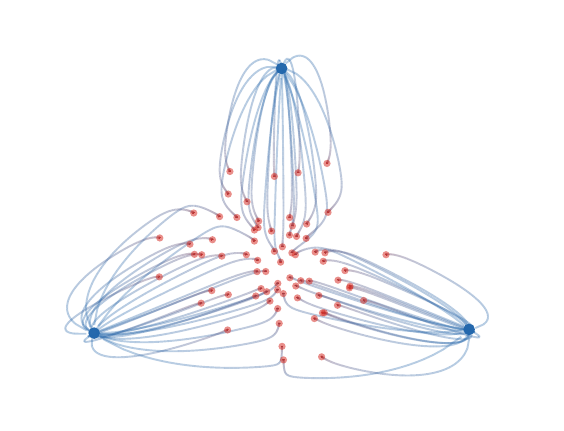
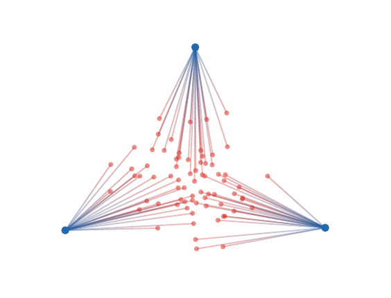
Diffusion-style paths can be more curved and noisy; OT paths are displacement-efficient but may be harder to parametrize in high dimension.
Live panel: diffusion and OT sampling
Diffusion trajectories and OT trajectories are compared on the same target geometry.
Is a diffusion map optimal?
This question separates flow matching from OT geodesics.
Key distinction. Both diffusion-style interpolants and OT interpolants connect simple and complex laws, but only the Brenier interpolation is guaranteed to minimize kinetic action. A learned sampler can therefore be a valid transport without being an optimal transport map.
Changing the interpolant changes trajectory geometry even when the endpoints are fixed.
Forward noising schedules
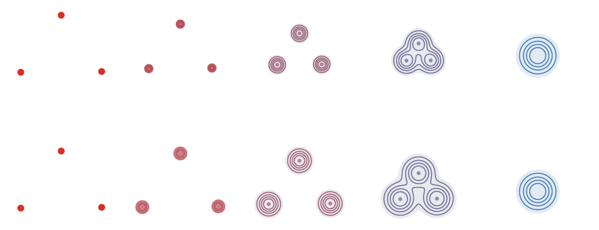
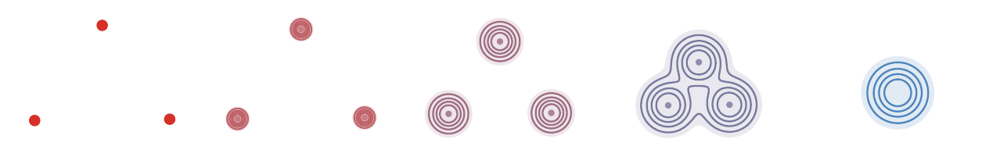

Different schedules produce different velocity fields even when they connect similar endpoint distributions.
Live panel: noising schedules
The schedule changes the speed at which the same endpoint problem is traversed.
Roadmap: dynamic optimal transport
1. Generative transport
2. Dynamic OT
3. Gradient flows
4. Training and biology
5. Attention dynamics
Wasserstein distance revisited
For quadratic cost, W_2^2(\textcolor{#c7372f}{\alpha_0},\textcolor{#226db4}{\alpha_1})= \min_{\textcolor{#7c5bbd}{\pi}\in\Gamma(\textcolor{#c7372f}{\alpha_0},\textcolor{#226db4}{\alpha_1})} \int \|\textcolor{#c7372f}{x}-\textcolor{#226db4}{y}\|^2\,d\textcolor{#7c5bbd}{\pi}(\textcolor{#c7372f}{x},\textcolor{#226db4}{y}).
In the Monge case, \textcolor{#7c5bbd}{\alpha_t}=((1-t)\operatorname{Id}+t\textcolor{#7c5bbd}{T})_\#\textcolor{#c7372f}{\alpha_0} is a constant-speed geodesic.
Dynamic OT asks for an intrinsic description of this geodesic through velocities.
Benamou-Brenier formulation
Benamou-Brenier. For absolutely continuous curves, \frac12 W_2^2(\textcolor{#c7372f}{\alpha_0},\textcolor{#226db4}{\alpha_1})= \min_{\rho_t,v_t} \int_0^1\int \frac12\|v_t(x)\|^2\rho_t(x)\,dx\,dt subject to \partial_t\rho_t+\operatorname{div}(\rho_t v_t)=0, \qquad \rho_{t=0}=\rho_0, \quad \rho_{t=1}=\rho_1.
Live panel: Benamou-Brenier geodesics
The dynamic formulation is easiest to read as mass moving through time.
Convex moment formulation
Set m_t=\rho_t v_t. Then the action becomes the perspective function \int_0^1\int \frac12\frac{\|m_t(x)\|^2}{\rho_t(x)}\,dx\,dt, with the linear constraint \partial_t\rho_t+\operatorname{div}(m_t)=0.
This is convex because (\rho,m)\mapsto \|m\|^2/\rho is the perspective of a quadratic function.
Algorithm: dynamic OT solve
Convex Benamou-Brenier discretization. Input: endpoint densities \rho_0,\rho_1, space-time grid, time step \Delta t.
Output: density path (\rho^k)_k and momenta (m^k)_k.
- Initialize a feasible interpolation (\rho^k,m^k)_k.
- Enforce the linear constraint \partial_t\rho+\operatorname{div}m=0.
- Minimize the convex action \sum_k\Delta t\int \frac12\|m^k\|^2/\rho^k.
- Recover velocities by v^k=m^k/\rho^k where \rho^k>0.
- Read the geodesic as the curve \textcolor{#c7372f}{\alpha_k}=\rho^k dx.
Dynamic geodesic example
The geodesic can be visualized either as evolving density or as a midpoint velocity field.
Velocity field
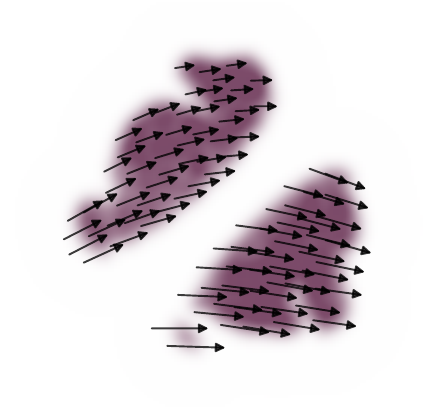
The vector field is not an arbitrary motion. It is the velocity minimizing kinetic energy under mass conservation.
At optimality, it is a gradient field in Euclidean quadratic transport.
Dual dynamic formulation
Hamilton-Jacobi dual. The dual of the half-action formulation above can be expressed through potentials \varphi_t satisfying \partial_t\varphi_t+\frac12\|\nabla\varphi_t\|^2\leq0. The endpoint objective is \int \varphi_1\,d\textcolor{#226db4}{\alpha_1}-\int \varphi_0\,d\textcolor{#c7372f}{\alpha_0}.
This is the dynamic counterpart of Kantorovich duality.
Primal and dual fields
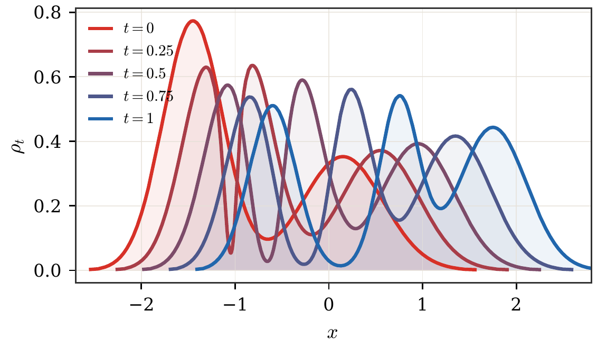
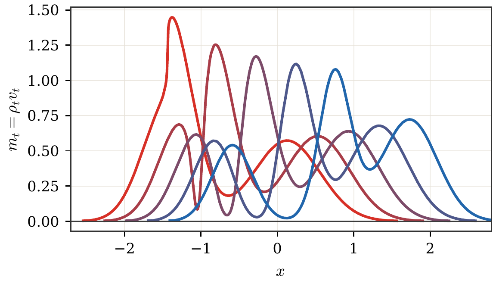
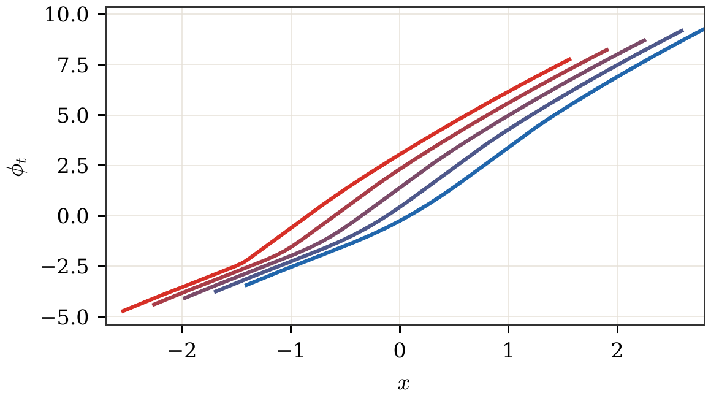
Density, momentum, and potential are coupled by the continuity equation and Hamilton-Jacobi inequality.
Roadmap: Wasserstein gradient flows
1. Generative transport
2. Dynamic OT
3. Gradient flows
4. Training and biology
5. Attention dynamics
Gradient flows in Wasserstein space
JKO scheme. Given an energy \mathcal F, the implicit Euler step is \textcolor{#c7372f}{\alpha^{k+1}}\in\arg\min_{\textcolor{#c7372f}{\alpha}} \frac{1}{2\tau}W_2^2(\textcolor{#c7372f}{\alpha},\textcolor{#c7372f}{\alpha^k})+\mathcal F(\textcolor{#c7372f}{\alpha}).
As \tau\to0, this defines a gradient flow over probability measures.
Single Dirac reduces to gradient descent
The JKO step extends ordinary implicit gradient descent. If \textcolor{#c7372f}{\alpha^k}=\delta_{x^k} and h(x)=\mathcal F(\delta_x), then W_2^2(\delta_x,\delta_{x^k})=\|x-x^k\|^2, so the JKO update becomes x^{k+1}\in\arg\min_x \frac{1}{2\tau}\|x-x^k\|^2+h(x). Letting \tau\to0 gives the classical ODE \dot x(t)=-\nabla h(x(t)).
Thus Wasserstein gradient flows are the distributional analogue of Euclidean gradient flows.
Algorithm: minimizing movements
JKO time stepping. Input: initial law \alpha^0, energy \mathcal F, step size \tau, number of steps K.
Output: approximate gradient-flow path (\textcolor{#c7372f}{\alpha^k})_{k=0}^K.
- Set k=0.
- Solve \textcolor{#c7372f}{\alpha^{k+1}}\in\arg\min_{\textcolor{#c7372f}{\alpha}} \frac{1}{2\tau}W_2^2(\textcolor{#c7372f}{\alpha},\textcolor{#c7372f}{\alpha^k})+\mathcal F(\textcolor{#c7372f}{\alpha}).
- Set k\leftarrow k+1.
- Repeat until k=K.
- Interpolate the sequence to approximate the continuous curve \textcolor{#c7372f}{\alpha_t}.
From JKO to PDE
For a perturbation of density \rho+\tau\eta, the first variation is defined by \mathcal F(\rho+\tau\eta)= \mathcal F(\rho)+ \tau\int \frac{\delta\mathcal F}{\delta\rho}(\rho)(x)\eta(x)\,dx+o(\tau).
When \delta\mathcal F/\delta\rho is smooth, the Wasserstein gradient flow satisfies \partial_t\rho_t= \operatorname{div}\left(\rho_t\nabla\frac{\delta\mathcal F}{\delta\rho}(\rho_t)\right).
Equivalently, v_t=-\nabla\frac{\delta\mathcal F}{\delta\rho}(\rho_t), \qquad \partial_t\rho_t+\operatorname{div}(\rho_t v_t)=0.
For example, \delta\operatorname{Ent}(\rho)/\delta\rho=\log\rho+1 gives the heat equation.
Basic Wasserstein gradients
Writing \rho=d\textcolor{#c7372f}{\alpha}/dx, the velocity is v=-\nabla_W\mathcal F(\textcolor{#c7372f}{\alpha}) with \nabla_W\mathcal F(\textcolor{#c7372f}{\alpha})=\nabla(\delta\mathcal F/\delta\rho).
\begin{array}{lll} \text{Linear:} & \mathcal F(\textcolor{#c7372f}{\alpha})=\int h(x)\,d\textcolor{#c7372f}{\alpha}(x) & v(x)=-\nabla h(x) \\[0.45em] \text{Entropy:} & \mathcal F(\textcolor{#c7372f}{\alpha})=\int \rho(x)\log\rho(x)\,dx & \partial_t\rho=\Delta\rho \\[0.45em] \text{Interaction:} & \mathcal F(\textcolor{#c7372f}{\alpha})=\iint k(x,y)\,d\textcolor{#c7372f}{\alpha}(x)d\textcolor{#c7372f}{\alpha}(y) & v(x)=-2\int\nabla_x k(x,y)\,d\textcolor{#c7372f}{\alpha}(y). \end{array}
For particles \textcolor{#c7372f}{\alpha^N}=\frac1N\sum_i\delta_{X_i}, the last line becomes an interacting ODE: \dot X_i=-\frac2N\sum_j\nabla_x k(X_i,X_j).
JKO entropy steps

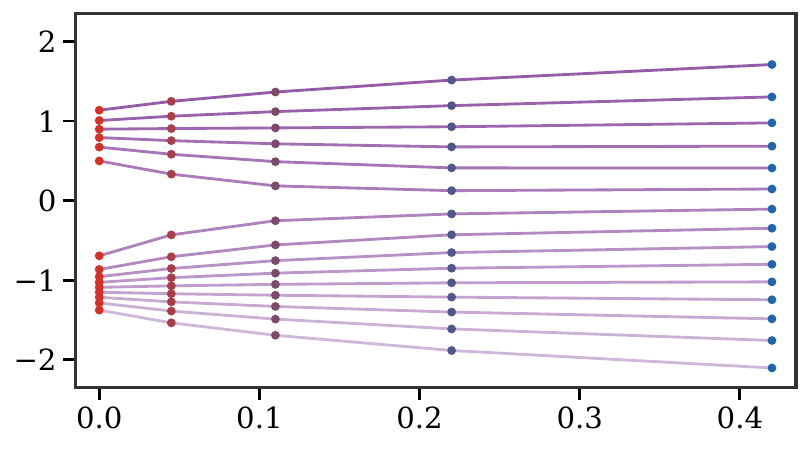
The implicit step regularizes the density by moving in Wasserstein geometry rather than in a fixed Euclidean space.
Live panel: JKO minimizing movements
The implicit Euler step trades decrease of energy against movement in Wasserstein space.
Gradient structure
Otto metric intuition. The tangent vector \partial_t\rho=-\operatorname{div}(\rho v) is measured by \|\partial_t\rho\|_{T_\rho}^2= \inf_v\left\{\int\|v\|^2d\rho: \partial_t\rho+\operatorname{div}(\rho v)=0\right\}.
This is the Riemannian-like structure behind W_2 gradient flows.
Least-squares inversion
The velocity is not arbitrary: for a prescribed infinitesimal density variation, the Wasserstein metric selects the minimum-energy vector field.
Otto inversion. For \dot\rho with zero mass, \|\dot\rho\|_{T_\rho}^2 = \min_v\left\{\int\|v(x)\|^2\rho(x)dx: \dot\rho+\operatorname{div}(\rho v)=0\right\}. The minimizer is a gradient field v=\nabla\psi, where \Delta_\rho\psi=\operatorname{div}(\rho\nabla\psi)=-\dot\rho.
This elliptic inversion is the practical bottleneck behind many high-dimensional Wasserstein flows.
Linear and nonlinear diffusions
Entropy-type energies give diffusion PDEs:
- Shannon entropy gives the heat equation,
- power entropy gives porous-medium equations.
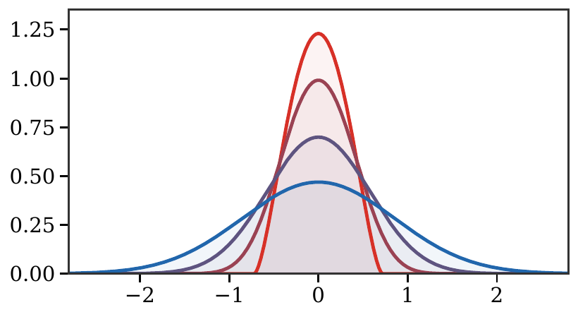
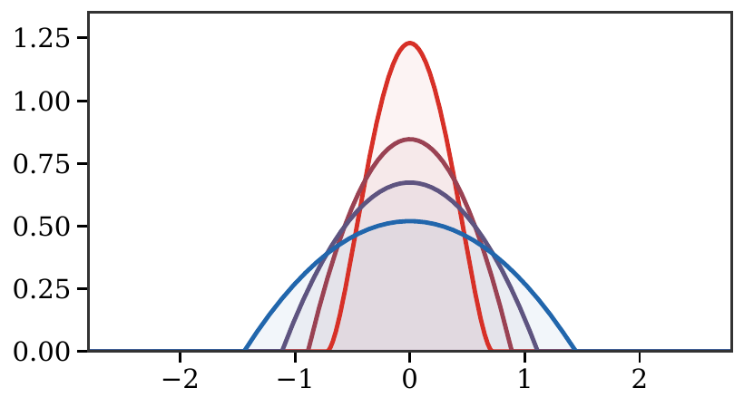
Live panel: diffusion gradient flows
Entropy and porous-medium energies produce different spreading laws.
Fokker-Planck and Langevin dynamics
For relative entropy with respect to a target density \beta\propto e^{-V}, \mathcal F(\textcolor{#c7372f}{\alpha})=\operatorname{KL}(\textcolor{#c7372f}{\alpha}\mid\textcolor{#226db4}{\beta}), the flow is the Fokker-Planck equation \partial_t\rho=\operatorname{div}(\rho\nabla V)+\Delta\rho.
This is the law of Langevin particles dX_t=-\nabla V(X_t)dt+\sqrt2\,dB_t.
Thus the same evolution can be read as a deterministic PDE for \rho_t or as the law of a stochastic particle system.
Live panel: Fokker-Planck evolution
The deterministic PDE and the particle SDE give two numerical views of the same flow.
Interactive: deterministic versus noisy descent
Noise changes the geometry of particle trajectories. With zero noise, particles follow descent curves. With Langevin noise, they explore the target landscape and spread across modes.
The slider controls the Brownian amplitude in a two-well potential.
Algorithm: Langevin particle solver
Euler-Maruyama Fokker-Planck sampler. Input: target potential V, step size h, particles (X_i^0)_{i=1}^N.
Output: empirical approximation \textcolor{#c7372f}{\alpha_t^N}=\frac1N\sum_i\delta_{X_i^t}.
- For each step k=0,\ldots,K-1, sample \xi_i^k\sim\mathrm N(0,I_d).
- Update X_i^{k+1}=X_i^k-h\nabla V(X_i^k)+\sqrt{2h}\,\xi_i^k.
- Approximate the law by \textcolor{#c7372f}{\alpha_{kh}^N}=\frac1N\sum_i\delta_{X_i^k}.
- Estimate densities by KDE or solve the Fokker-Planck PDE directly when dimension permits.
Three numerical representations
particles
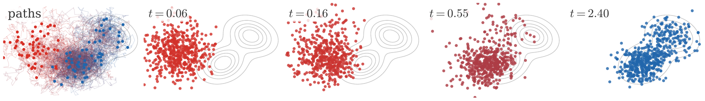
particles
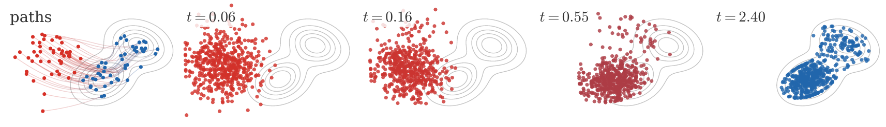
PDE
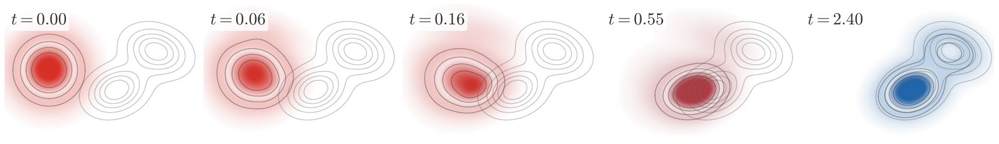
Discrepancy-driven flows
\begin{gathered} F(\alpha)=\mathrm{ED}(\alpha,\beta),\\ \mathrm{ED}^2=2\int |F_\alpha-F_\beta|^2dx,\\ \dot q_t(u)=\frac{2(u-F_\beta(q_t(u)))}{\mathrm{ED}(\alpha_t,\beta)} . \end{gathered}
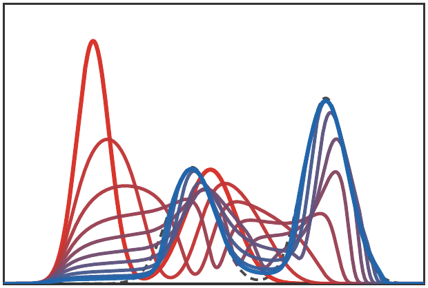
\begin{gathered} F(\alpha)=W_2(\alpha,\beta),\\ \dot q_t(u)=-\frac{q_t(u)-q_\beta(u)} {W_2(\alpha_t,\beta)} . \end{gathered}
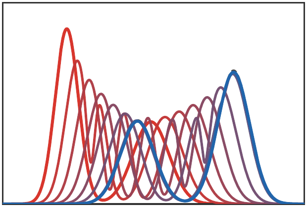
\begin{gathered} F(\alpha)=\mathrm{KL}(\alpha|\beta),\\ \partial_t\rho_t =\partial_x\!\left(\rho_\beta\,\partial_x(\rho_t/\rho_\beta)\right). \end{gathered}
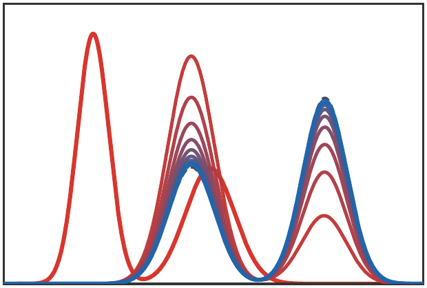
Live panel: gradient-flow objectives
Different discrepancies create different velocities even with the same target. The Sinkhorn option follows the negative Wasserstein gradient of \mathrm{OT}_\varepsilon(\alpha,\beta)-\frac12\mathrm{OT}_\varepsilon(\alpha,\alpha), so increasing the time slider now shows a genuine Sinkhorn-divergence descent.
Particle objective geometries
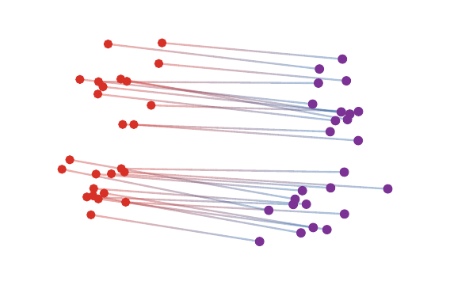

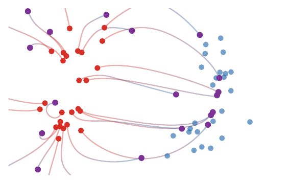

Different losses induce very different particle forces: OT rays, local-density pressure, MMD fields, and Sinkhorn divergence forces.
Live panel: MMD particle flow
The same source and target clouds are evolved with three kernel discrepancies: energy distance, Laplacian MMD, and Gaussian MMD. The bandwidth slider highlights the locality tradeoff of positive kernels.
Constraints and unbalanced flows
Dynamic formulations can impose extra constraints or allow mass variation. These change the tangent space and therefore the PDE.
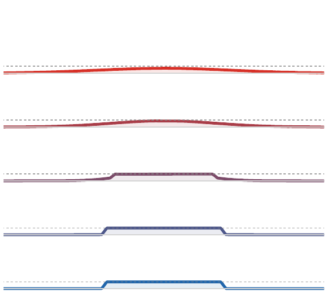
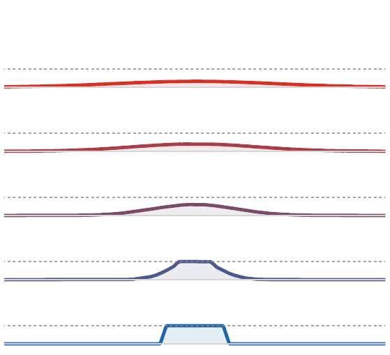
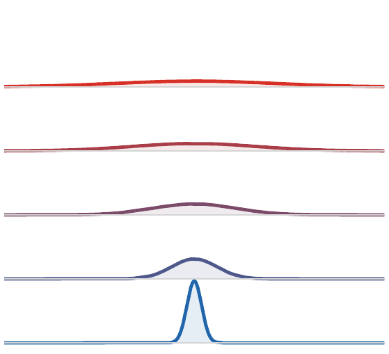
Live panel: density-constrained flows
Hard density caps create pressure-like effects in the transport dynamics.
Crowd motion with congestion
Congestion models combine transport, entropy, and a hard density cap. A typical energy is \mathcal F(\textcolor{#c7372f}{\alpha}) =\int \varphi\,d\textcolor{#c7372f}{\alpha}+\operatorname{Ent}(\textcolor{#c7372f}{\alpha})+\iota_C(\textcolor{#c7372f}{\alpha}), \qquad C=\{\rho\,dx:\rho(x)\leq \kappa(x)\}.
Example: density cap. The Wasserstein gradient flow follows the force -\nabla\varphi, diffuses through entropy, and adds a pressure term enforcing \rho\leq\kappa.
The reference model is the Maury-Roudneff-Chupin-Santambrogio crowd-motion framework.
Crowd motion visual
This visual illustrates how the hard density cap creates a pressure field in congested regions.
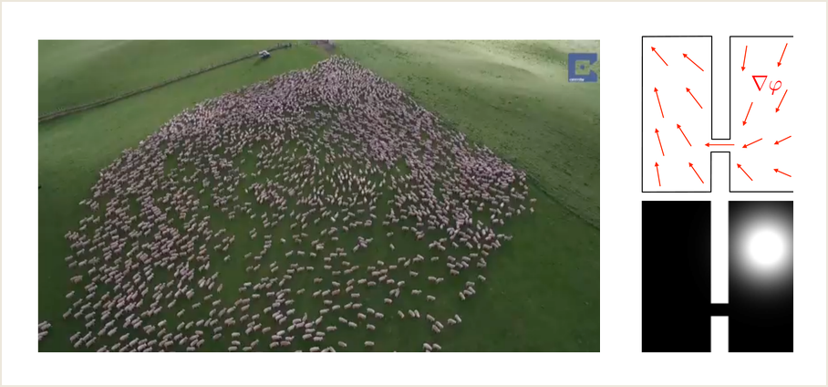
Wasserstein-Fisher-Rao flows
WFR augments transport by growth: \partial_t\rho+\operatorname{div}(\rho v)=\rho r, \qquad \int_0^1\int(\|v\|^2+r^2)\rho\,dx\,dt.
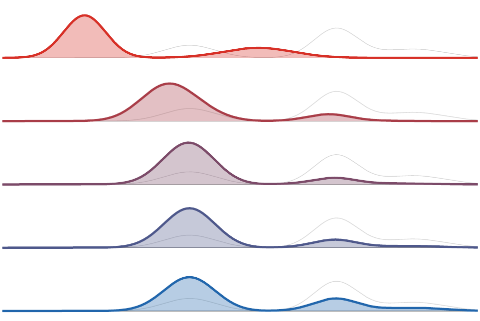
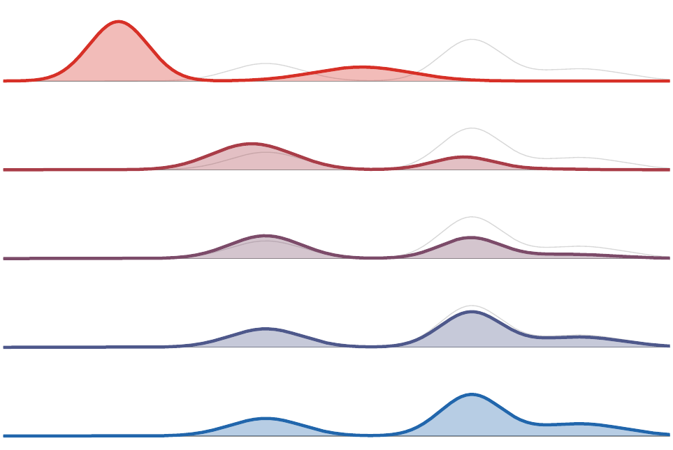
Unbalanced geometries add a scalar growth field to the transport velocity, allowing mass to appear or disappear.
Roadmap: training and biology
1. Generative transport
2. Dynamic OT
3. Gradient flows
4. Training and biology
5. Attention dynamics
Mean-field two-layer networks
A two-layer model can be written as an integral over neurons: f_{\textcolor{#c7372f}{\alpha}}(z)=\int a\,\sigma(w^\top z)\,d\textcolor{#c7372f}{\alpha}(a,w).
Here \alpha is a probability measure over neuron parameters (a,w). In the infinite-width limit, particle descent becomes a Wasserstein gradient flow for \alpha_t.
Mean-field risk and first variation
Write \theta=(a,w) and \varphi_\theta(z)=a\,\sigma(w^\top z). For supervised data law \nu on pairs (z,y), \mathcal R(\textcolor{#c7372f}{\alpha}) =\frac12\int |f_{\textcolor{#c7372f}{\alpha}}(z)-y|^2\,d\nu(z,y), \qquad f_{\textcolor{#c7372f}{\alpha}}(z)=\int \varphi_\theta(z)\,d\textcolor{#c7372f}{\alpha}(\theta).
The first variation is explicit: \frac{\delta\mathcal R}{\delta\textcolor{#c7372f}{\alpha}}(\theta) = \int (f_{\textcolor{#c7372f}{\alpha}}(z)-y)\,\varphi_\theta(z)\,d\nu(z,y). Particle gradient descent differentiates this quantity with respect to the neuron parameter \theta.
Live panel: mean-field MLP training
The neuron distribution evolves as a Wasserstein gradient flow in parameter space. The live panel shows angular concentration at several optimization times and lets one vary the number of teacher neurons.
Mean-field training PDE
For a risk functional \mathcal R(\textcolor{#c7372f}{\alpha}), the mean-field dynamics has the form \partial_t\textcolor{#c7372f}{\alpha_t}+ \operatorname{div}(\textcolor{#c7372f}{\alpha_t} v_t)=0, \qquad v_t=-\nabla\frac{\delta\mathcal R}{\delta\textcolor{#c7372f}{\alpha}}(\textcolor{#c7372f}{\alpha_t}).
This is a training PDE, not merely an optimization algorithm in a finite parameter vector.
Perceptron global-convergence message
For two-layer perceptrons, the empirical particle system is \textcolor{#c7372f}{\alpha_t}=\frac1m\sum_{k=1}^m \delta_{(a_k(t),w_k(t))}.
The mean-field limit replaces finite-dimensional parameter descent by descent of a functional \mathcal R(\textcolor{#c7372f}{\alpha}).
Qualitative theorem. With enough directional support, convergence rules out bad stationary points: the limiting measure is a global minimizer of the mean-field risk.
This is why the measure viewpoint is not just notation: it changes the convexity and stationarity picture.
Neuron trajectories
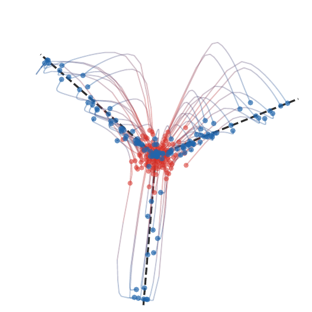
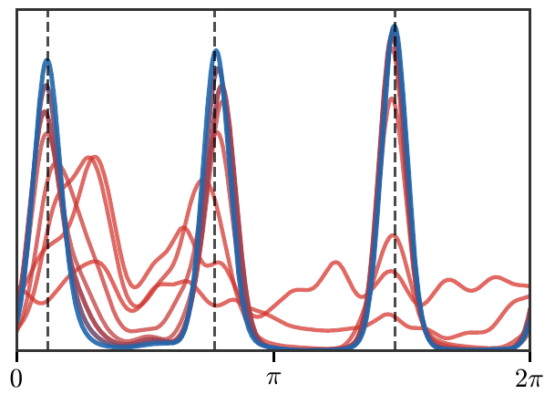
The empirical measure of neurons evolves as particles in parameter space.
Normalized and Muon-type flows
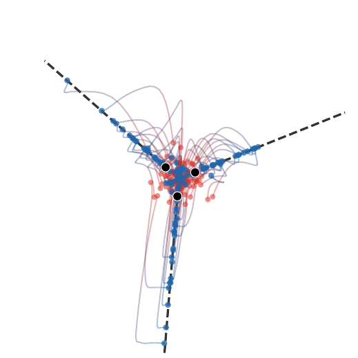
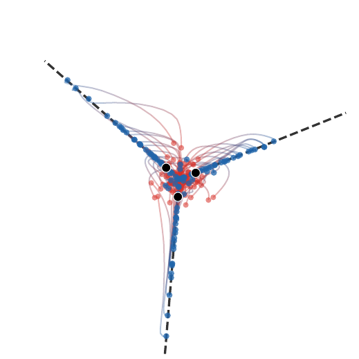
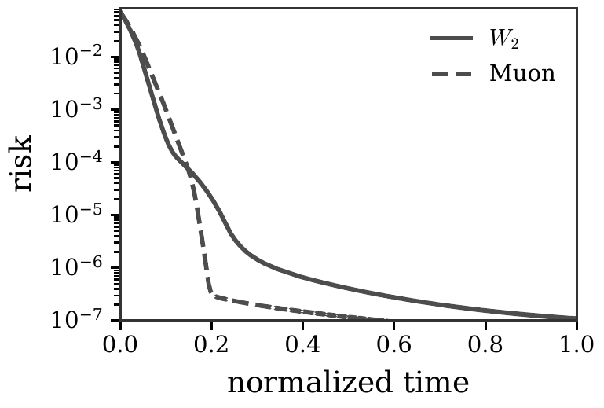
Changing the underlying transport geometry changes the training path and the risk decay.
Live panel: Muon-type normalized dynamics
The normalized geometry changes the effective path through parameter space. The live panel compares W2 and Muon-like dynamics through trajectories and multi-time angular concentration for selectable teacher neurons.
Single-cell and multi-omics viewpoint
Single-cell data naturally produces empirical distributions of cells in feature spaces. OT is used to:
- compare cell populations,
- match cells across modalities,
- infer developmental trajectories,
- regularize couplings with biological priors.
The mathematical object is again a coupling or a flow between distributions.
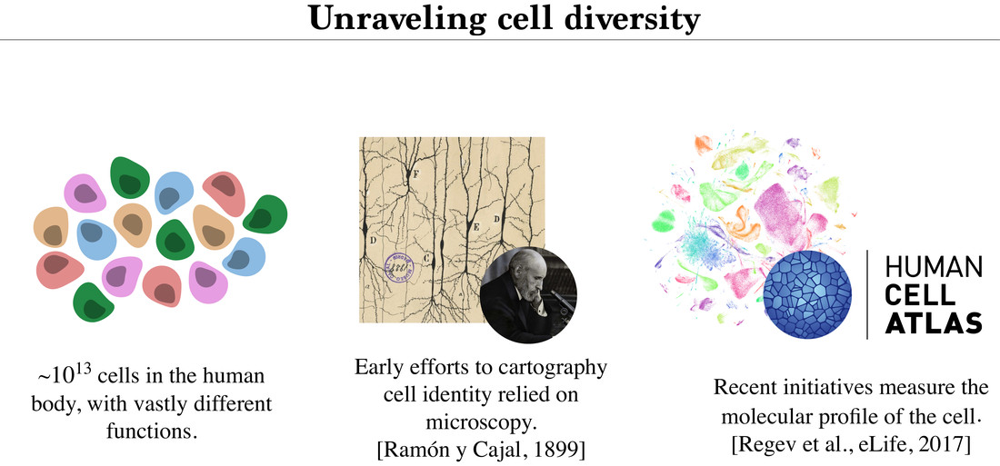
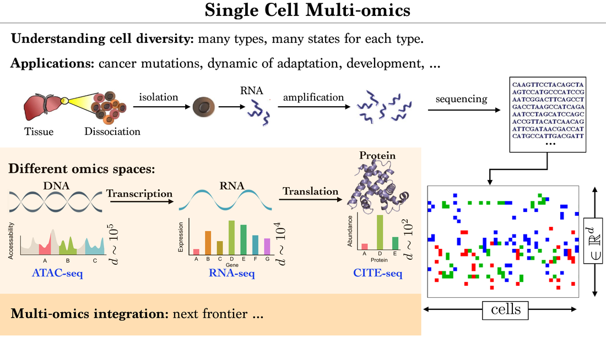
Cell-to-cell dissimilarity
Single-cell comparison is naturally a distribution problem rather than a pointwise one.
Example: cell populations. A sample is an empirical measure \textcolor{#c7372f}{\alpha}=\frac1n\sum_i\delta_{\textcolor{#c7372f}{x_i}} over cells represented by gene-expression, accessibility, or learned latent features. OT compares two populations by coupling cells while respecting the geometry of the feature space.
The coupling is not only a number: it can be interpreted as a soft cell-to-cell correspondence.
Paired multi-omics integration
When several modalities describe the same biological system, OT can align their empirical laws through a shared latent geometry.
Coupling across modalities. Multi-omics integration often seeks nonnegative weights or maps that match several observed distributions at once. OT supplies the cost-sensitive alignment term, while additional constraints encode marker structure, sparsity, or temporal consistency.
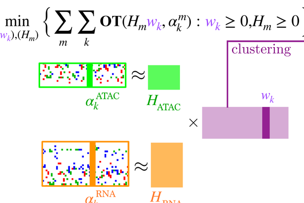
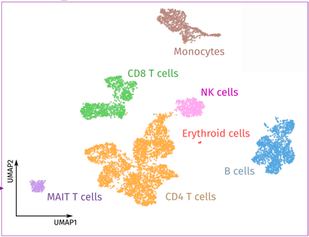
This is the same mathematical pattern as barycenters and multimarginal couplings, specialized to biological measurements.
Trajectory inference as transport
Given observations at several times, one can infer a coupling or flow linking consecutive distributions.
Example: developmental dynamics. A population at time t_k is a measure \textcolor{#c7372f}{\alpha_k}. OT-based trajectory inference connects \textcolor{#c7372f}{\alpha_k} to \textcolor{#226db4}{\alpha_{k+1}} with geometry and growth priors.
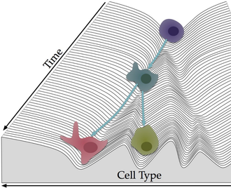
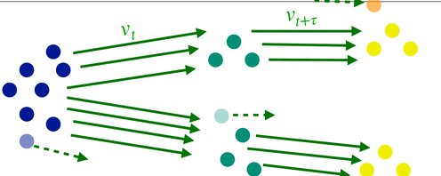
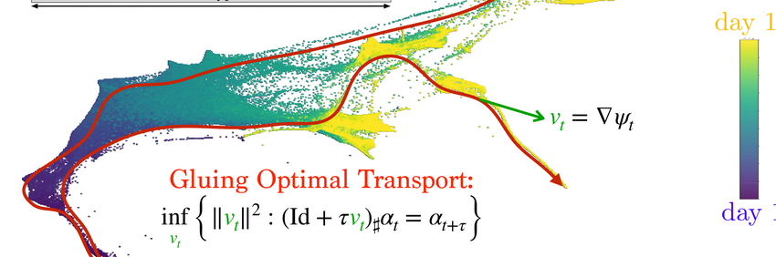
Roadmap: attention dynamics
1. Generative transport
2. Dynamic OT
3. Gradient flows
4. Training and biology
5. Attention dynamics
Attention as interacting particles
Self-attention maps a set of tokens (x_i)_i to weighted averages A_i(X)=\sum_j \frac{\exp(q(x_i)^\top k(x_j))}{\sum_\ell \exp(q(x_i)^\top k(x_\ell))} v(x_j). The maps q,k,v are the query, key, and value parametrizations.
This is permutation-equivariant and can be interpreted as an interaction rule between particles.
Continuous-depth transformers
A residual transformer layer has the form x_i^{\ell+1}=x_i^\ell+h\,A_i(X^\ell).
As the depth step h\to0, this suggests an ODE \frac{dx_i}{dt}=A_i(X_t), and, in the mean-field limit, a PDE for the token distribution.
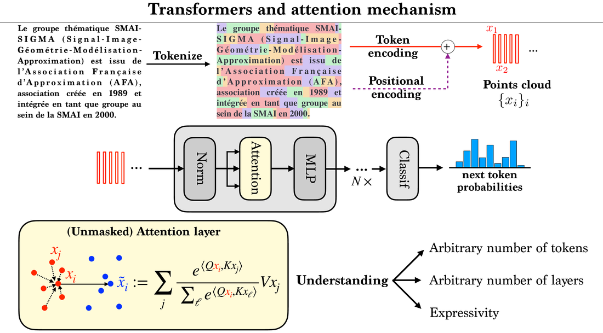
L2 attention and mean shift
If attention scores use -\|\textcolor{#c7372f}{x}-\textcolor{#226db4}{y}\|^2/\varepsilon, the continuum vector field resembles mean shift: v_{\textcolor{#c7372f}{\alpha}}(\textcolor{#c7372f}{x})= \frac{\int (\textcolor{#226db4}{y}-\textcolor{#c7372f}{x})e^{-\|\textcolor{#c7372f}{x}-\textcolor{#226db4}{y}\|^2/\varepsilon}\,d\textcolor{#c7372f}{\alpha}(\textcolor{#226db4}{y})} {\int e^{-\|\textcolor{#c7372f}{x}-\textcolor{#226db4}{y}\|^2/\varepsilon}\,d\textcolor{#c7372f}{\alpha}(\textcolor{#226db4}{y})}.
This moves particles toward local density modes.
Mean-shift PDE visualization
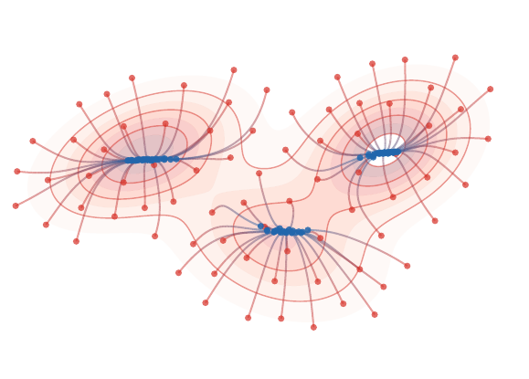
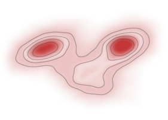
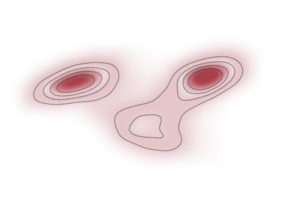
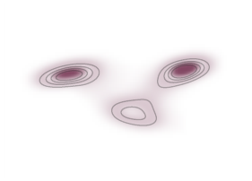
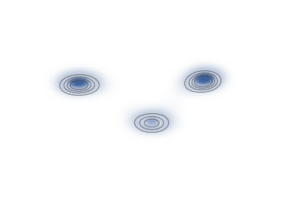
Live panel: mean-shift dynamics
Replacing dot-product attention by an L2 kernel reveals the mean-shift mechanism.
Gaussian case and clustering
For Gaussian mixtures, attention/mean-shift flows concentrate mass near modes. This gives a PDE-level explanation of clustering in token dynamics.
Message. Transformer depth can be viewed as an evolution equation on tokens. In suitable limits, it becomes a nonlocal PDE for a probability measure.
Universality viewpoint
Deep transformers alternate equivariant interaction blocks. In the continuum viewpoint, they generate rich families of flows on empirical measures.
The qualitative message is:
- attention is an interaction kernel,
- depth is time,
- tokens are particles,
- expressive power comes from composing many equivariant flow steps.
Universality proof sketch
The reference deck used this as a final message: attention layers are not only a modeling heuristic, they can emulate rich equivariant computations.
Sketch. Residual attention blocks build permutation-equivariant maps (x_i)_i\mapsto (x_i+hA_i(X))_i. By composing such blocks, one can localize interactions, separate token configurations, and approximate elementary equivariant operations. These operations generate dense families of continuous equivariant maps on compact sets; in discrete settings, related constructions underlie transformer universality results.
The PDE viewpoint interprets the same statement infinitesimally: expressive depth comes from composing nonlocal interaction vector fields.
Interactive MyST figures
The project also contains browser-native interactive experiments mirroring several of these ideas:
Conclusion
Takeaway. Dynamic OT links maps, PDEs, particles, optimization, training, generation, and attention. The same continuity equation reappears under many names.
Samplingflow matching and diffusion
OptimizationWasserstein gradient flows
Learningneurons, cells, and tokens
OT4ML - Dynamic Flows